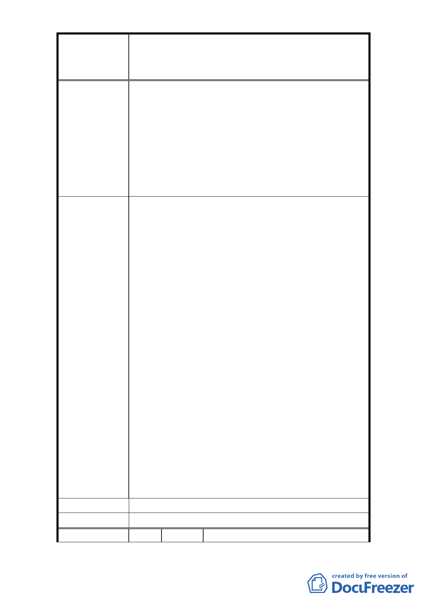

修訂臺北市大安區青田街保存區聚落風貌保存專用區細部計
案
名
畫、變更部分第三種住宅區、第三種商業區(特)為第三種住宅區
(特)(日式宿舍)及第三種商業區(特)(日式宿舍)暨劃定週邊地
區都市設計管制細部計畫案
歷史建物保存，限制人民私有財產之使用。
6. 請將本里內公有財產已列為古蹟及歷史建物善加維
護保存。請恢復人民住三土地所有應有之權利（回
復原狀）。
7. 臺北市政府文化局暨都發局為「青田街保存區聚落
風貌保存專用區細部計畫」原為保存幾處古蹟及歷
史建物，而將整個青田街區均限制了相關改建細部
條件，確實不妥。
1. 建請鈞府都發局重視廣大青田街民意，將本區原來
的住三土地開發條件，恢復原狀以維民權益；我們
已是近五十年老樓，並請發展局實地察看。
2. (1)請將大安區金華段二小段 81、78-2、99 地號之
土地使用分區恢復為一般住三，並比照住三土地之
都計規定。(2)請貴單位再次清查本「青田街」街廓
內，仍具有保存價值之建物土地，繼續維護其保存
並編列預算強力執行。但不具保存之空地建物，請
儘速解編。
3. 建請鈞府都發局將該保存的公地古蹟及歷建極力維
建 議 辦 法 護，並將解編本區人民私有財產之住三條件、恢復
與永康街、麗水街、溫州街等地一樣之住三條件（恢
復原狀）。
4. 文化區應限制於古蹟建物，其餘人民財產應恢復市
府所訂的住三條款。
5. 請儘速恢復本里民私有財產之住三條件。
6. 請儘速恢復本里民私有財產之住三所有開發條件。
（與民國 96 年以前相同，即回覆原狀住三土地）。
7. 建請鈞府都發局將本青田街除了古蹟及歷史建物
外，將原原本本的住三還給我們，我們不要被框住，
青田街 2 巷居民積極並熱烈請求。
市 府 回 覆 意 見 同編號 1 回覆意見。
委 員 會 決 議 同編號 1 決議。
編 號 17 陳情人 周白玉
- 18 -